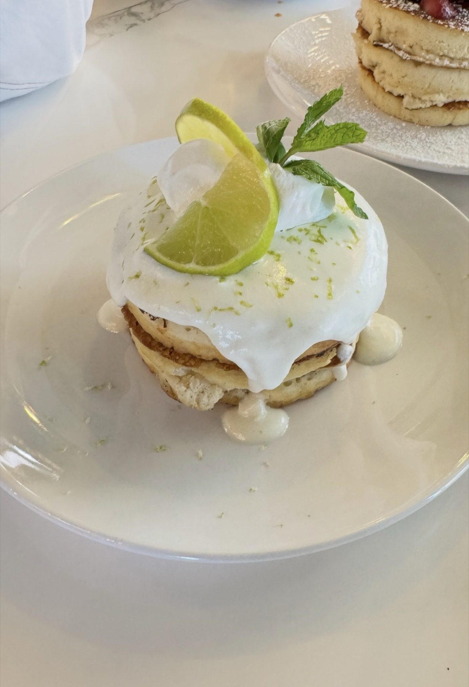

Brunch plates
Omelet la Campesina, steak and eggs, eggs Benedict, chicken and waffles and pancake tacos.
La Creación · Lutz
La Creación Bistro serves Lutz from Wesley Chapel.
Coming from Lutz? La Creación Bistro is in Wesley Chapel, on Halter Loop. Puerto Rican and American plates for brunch and dinner.
From the kitchen
Brunch plates, small plates and sweets.
Omelet la Campesina, steak and eggs, eggs Benedict, chicken and waffles and pancake tacos.

Stuffed plantain cups, steak bites, beef skewers, ahi tuna poke nachos and flatbreads.

Lemon ricotta pancakes and Mi Isla French toast with a red wine guava reduction.
4.5 ★ · 144 Google reviews
The food is incredible, the service is top-notch, and every visit has been better than the last. We’ve been here several times now, and each time we leave more impressed than before. They are located in the new Hub of Wesley Chapel. You can tell the owners and staff put their heart into every detail. From the moment you walk in until the moment you leave, you feel welcomed and taken care of.
They don't have a big daily menu but they have variety of foods to choose from. We had the steak bites but ended up loving the potato wedges that comes with it more. I had the pasta la concha and my husband had the pork porterhouse. They were both delicious. We also got the bread pudding but forgot to take pictures. Service was great. Everyone was so nice and helpful.
The waitress that helped us out was Liza and she was great. The food was terrific, drinks were on point, and so was the service. The new area looks fantastic and it looks like it’s going to get really busy. Great place to eat and will be back again. Highly recommend!
I’d give this spot a solid 4.5 out of 5 stars. The food and drinks were consistently great, and the ambiance is wonderfully cozy. The staff was attentive and welcoming… I never felt neglected once. Plus, given how convenient the location is, I’ll definitely be coming back!
Our server Isabella is great! We were there for a Women networking event night and she handled everything quickly and got everything we asked for. The food was delicious, definitely recommend the coconut mojito for drinks. The owner even took the picture for us at the end. Great restaurant 10/10 recommend for anyone needs a place for dinner.